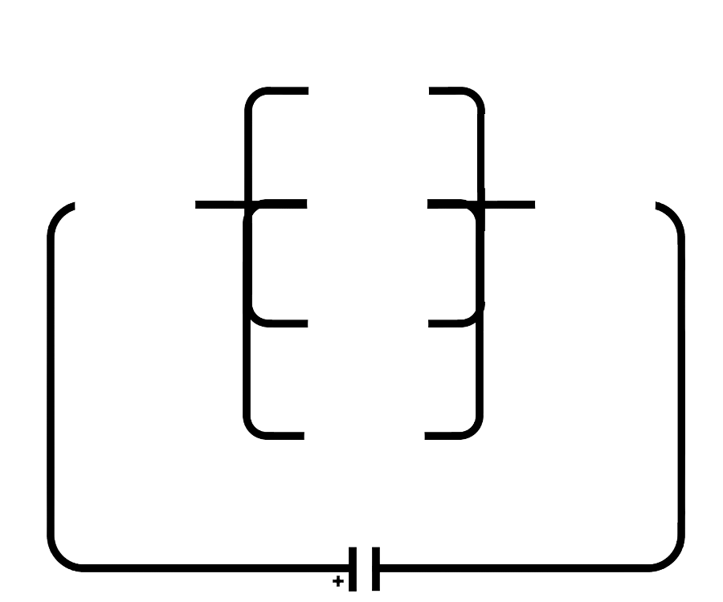

A Bateria é considerada como 12V e 0,2A de corrente;
Resistores considerados como 100 Ohms de resistência;
Capacitores contem carga de 2 deciCoulomb (0.2 C);
Indutores devem ser considerados com aproximadamente 0.5 Henri;
Arraste os componentes que deseja acima aos círculos do circuito.

O que é um resistor?
Um resistor ou uma resistência, é um dispositivo elétrico muito utilizado em eletrônica, ora com a finalidade de transformar energia elétrica em energia térmica por meio do efeito joule, ora com a finalidade de limitar a corrente elétrica em um circuito.
Resistores são componentes que têm por finalidade oferecer uma oposição à passagem de corrente elétrica, através de seu material.
A essa oposição damos o nome de resistência elétrica ou impedância, que possui como unidade o ohm. Causam uma queda de tensão em alguma parte de um circuito elétrico, porém jamais causam quedas de corrente elétrica, apesar de limitar a corrente.
Isso significa que a corrente elétrica que entra em um terminal do resistor será exatamente a mesma que sai pelo outro terminal, porém há uma queda de tensão.
Utilizando-se disso, é possível usar os resistores para controlar a corrente elétrica sobre os componentes desejados.
Potência, Diferença de Potencial, Resistencia Equivalente (Série e Paralelo) e Potência Dissipada são informações que podem ser extraídas de um circuito, como no simulador.
Tais podem ser definidas como:
Potência[Watt] = U . I Potência Dissipada[Watt] = U . I Resistência em série[Ohms] = R1 + R2 ... Rn Resistência em paralelo[Ohms] = 1/R1 + 1/R2 + ... 1/Rn Diferença de Potencial[Volts] = R . I
Unidades: I = Ampere, R = Ohms, U = Volts
O que é um capacitor?
Capacitor ou condensador, é um componente que armazena cargas elétricas num campo elétrico, acumulando um desequilíbrio interno de carga elétrica.
Os formatos típicos consistem em dois eletrodos ou placas que armazenam cargas opostas.
Estas duas placas são condutoras e são separadas por um isolante (ou dielétrico).
A carga é armazenada na superfície das placas, no limite com o dielétrico.
Devido ao fato de cada placa armazenar cargas iguais, porém opostas, a carga total no dispositivo é sempre zero.
Capacitância Equivalente (Série e Paralelo) e Energia Acumulada no Capacitor são informações que podem ser extraídas de um circuito, como no simulador.
Tais podem ser definidas como:
Capacitância em Série[Farad] = 1/C1 + 1/C2 + ... + 1/Cn
1 / Capacitância em Paralelo[Farad] = C1 + C2 + ... + Cn
Energia Acumulada no Capacitor[Joule] = (Capacitância Equivalente . U)/2
Unidades: I = Ampere, C = Farad, U = Volts
O que é um indutor?
Um indutor é um dispositivo elétrico passivo que armazena energia na forma de campo magnético, normalmente combinando o efeito de vários loops da corrente elétrica.
O indutor pode ser utilizado em circuitos como um filtro passa baixa, rejeitando as altas frequências.
Também costuma ser chamado de bobina, choke ou reator.
Um indutor é geralmente construído como uma bobina de material condutor, por exemplo, fio de cobre. Um núcleo de material ferromagnético aumenta a indutância concentrando as linhas de força de campo magnético que fluem pelo interior das espiras. Indutores podem ser construídos em circuitos integrados utilizando o mesmo processo que é usado em chips de computador. Nesses casos, normalmente o alumínio é utilizado como material condutor. Porém, é raro a construção de indutores em CI's; eles são volumosos em uma pequena escala, e praticamente restritos, sendo muito mais comum o uso de um circuito chamado "gyrator", que utiliza um capacitor comportando-se como se fosse um indutor.
Pequenos indutores usados para frequências muito altas são algumas vezes feitos com um fio passando através de um cilindro de ferrite.
Tensão nos Indutores, Energia Acumulada no Indutor e Indutância Equivalente (Série e Paralelo) são informações que podem ser extraídas de um circuito, como no simulador.
Tais podem ser definidas como:
Tensão nos Indutores[Volts] = -L . (I/A)
Energia Acumulada no Indutor[Joules] = (L . I^2)/2
Indutância em Série[Henri] = L1 + L2 + L3 + ... + Ln
1 / Indutância em Paralelo[Henri] = 1/L1 + 1/L2 + ... + 1/Ln
Unidades: I = Ampere, L = Henri, A = Área[m]
Grupo 4
Mateus José Whitaker Filipe
Erik Signori Thalheimer
Lucas Lopes Leme
Rafael Vedoato Lett
Mayron Germann Sousa de Pádua